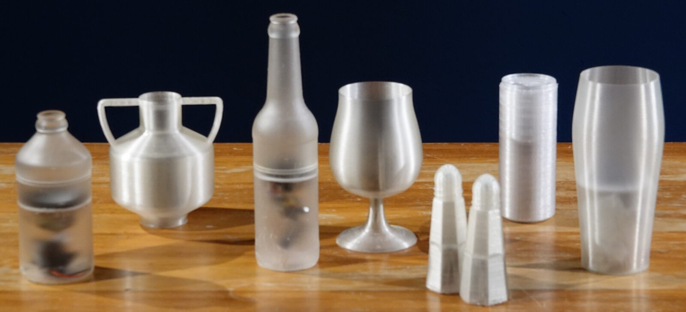
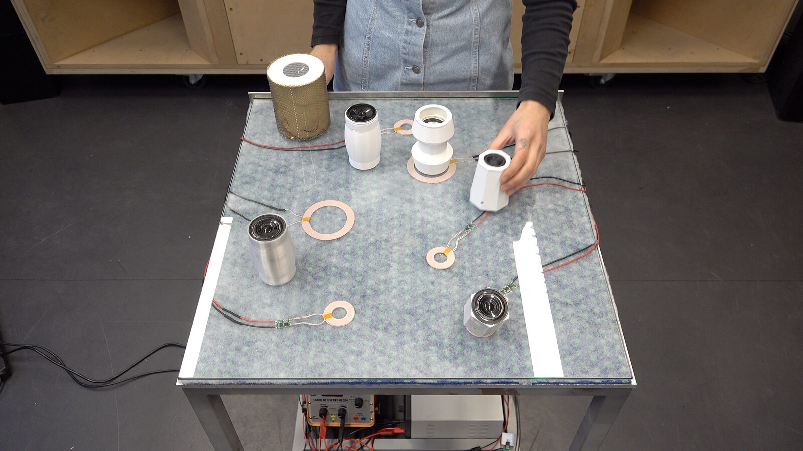
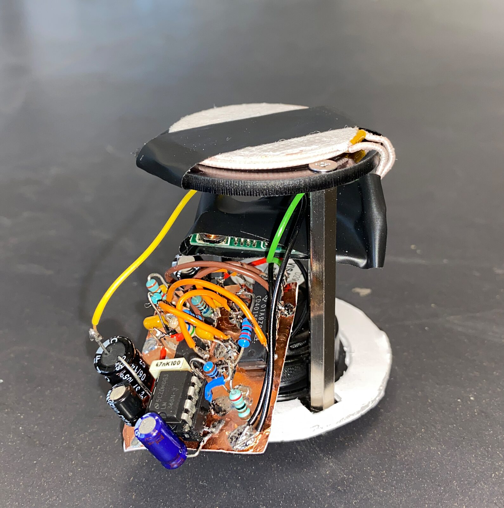
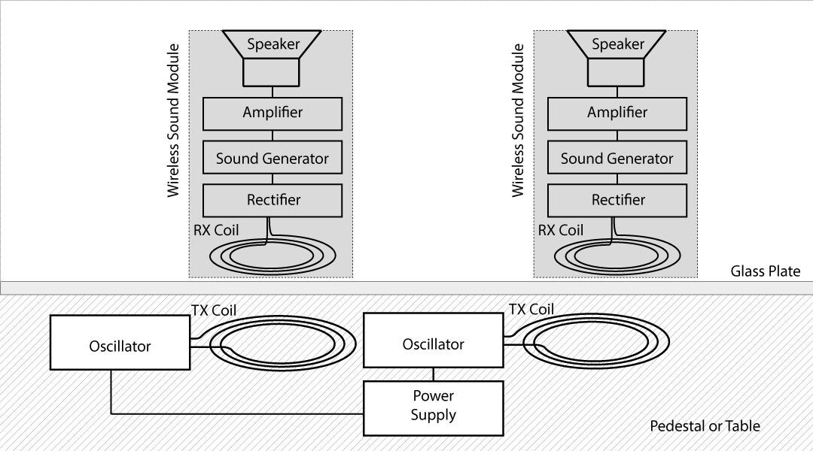
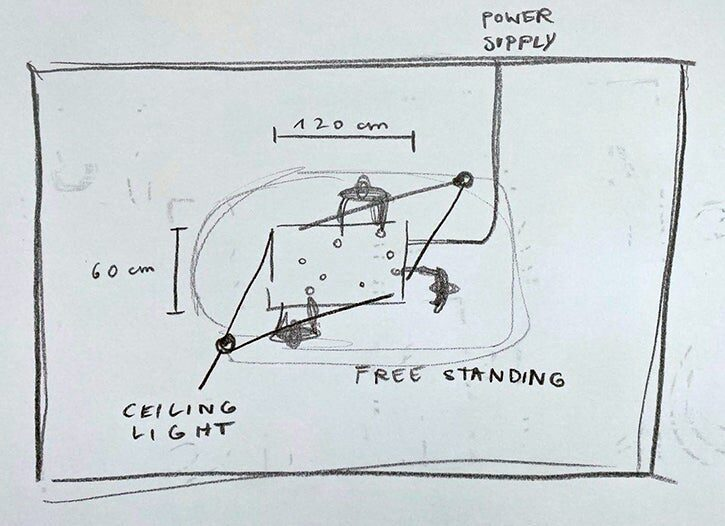
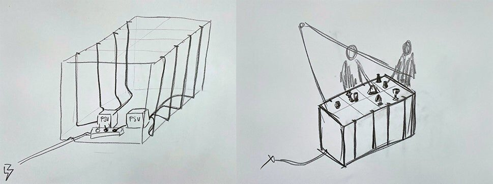
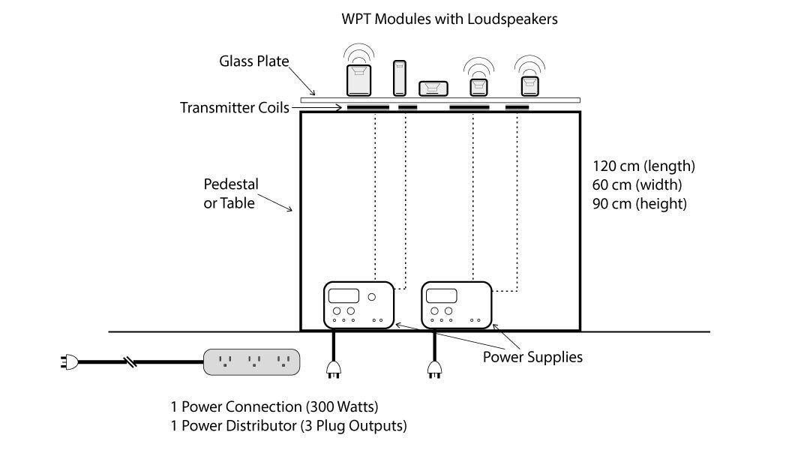

Wireless Sound Modules
Abstract
We study the question of how wireless, self-contained CMOS-synthesizers with built-in speakers can be used to achieve low-threshold operability of multichannel sound fields. We deliberately use low-tech and DIY approaches to build simple sound modules for music interaction and education in order to ensure accessibility of the technology. The modules are operated by wireless power transfer (WPT). A multichannel sound field can be easily generated and modulated by placing several sound objects in proximity to the induction coils. Alterations in sound are caused by repositioning, moving or grouping the sound modules. Although not physically linked to each other, the objects start interacting electro-acoustically when they share the same magnetic field. Because they are equipped with electronic sound generators and transducers, the sound modules can work independently from a sound studio situation.


Project Description
This sound art installation involves musical interaction between a performer and a number of smaller “sound objects”, also called modules. The audience or visitors are allowed to play with the modules. The setup consists of a table or pedestal on which the modules are placed. The work should be presented indoor and displayed in the center of a room, so that people can walk around.


An early version of a table for presenting the installation.
The core concept of our approach was to build wireless sound modules. Transducers are integrated into a module casing. Non-sophisticated music electronics are used to generate audio signals. The modules are powered by induction coils. WPT is based on the following principle: a power supply driving a circuit generates an alternating current which, in turn, is transmitted to a wound wire to form a flat spiral coil. This is called the transmitter. Voltage is induced into the receiver coil by electromagnetic induction. The voltage is then rectified to enable it to drive another circuit. Alterations in sound are caused by repositioning, moving or grouping the sound modules. Although the objects are not physically linked to each other, they start interacting electro-acoustically when they share the same magnetic field.


Example of the electronic parts of a module.
Each object functions as a sealed chamber for a single dynamic loudspeaker. When the objects are placed into the magnetic field of the current-carrying induction coils, which are integrated into a table, the circuits are put into operation and produce sound which is played back via the built-in loudspeakers. We used 3D printing as an effective method to create various shapes, tailored to the needs of our application. We decided to use familiar shapes like bottles, cans, vases and salt shakers.


The direct relation between the physical parameters of the induction field and the sound gives the user an audible feedback. Here, to play with the sound, the objects can be tilted or even held above the magnetic field, which works up to a distance of approximately 2.5". For example, the frequency of the oscillators rises with distance while the amplitude decays. If several Objects are placed into the same magnetic field, the chips start colluding and "battling" about the available power. The haptic properties of each module correspond with particular sounds. Random sounds, glitches and oscillations develop a life of their own and can’t be exactly reproduces a second time. Whereas the overall sound structure is controlled by the performer, respectively audience.
Installation Notes
Depending on the restrictions in the host country China at the time of the conference, we are eager to present the installation in person. Most of the equipment can be carried or shipped to the venue by the artists.

Installation Requirements
Space requirements: The work should be displayed indoor. The university environment or a gallery space appear to be appropriate. The installation setup consists of the pedestal/table and the sound objects and should be placed in the center of a room. The actual room size can be variable. We recommend to leave enough space for the audience to walk around the table. A ceiling light above the display area would be helpful.
Floor Plan & Logistical Requirement: The suggested minimum room size should be 6m x 6m. A larger room will work too. For our installation we used a modified, wooden table. The induction coils were put right under the tabletop. For logistical reasons it would be helpful if the organizer could provide a wooden table.
A fall-back solution could be a simplified setup based on a wooden plate with a maximum thickness of 1 cm to allow inductive coupling between the transmitter and the receiver coils. Dimensions are variable.


Simplified floor plan.
Only a short installation time is needed for assembling the components. One needs to place the power supply under the table, connect all power cables with the induction coils and arrange the coils. We estimate this process would take two hours, including unpacking all materials. Most of the process is self-explanatory and clear instructions can be given to third persons, in case we are not able to be present. No calibration procedures are necessary.


The drawing on the left indicates the position of the laboratory power supplies underneath the table.
One power connection should be accessible at the venue. The basic technical set-up of our installation consists of one laboratory power supply, alligator clamps, induction coils (RX & TX) for wireless power transfer (WPT), and several sound modules. The final number of modules is not fixed.


Cross-section view of an earlier state.
Equipment Requirements:
Table I. Equipment Requirements | |
|---|---|
1 x Laboratory power supplies | Self |
Sound Modules | Self |
Wireless Power Transmitters | Self |
Cables, Accessories | Self |
Power cords with China connectors | Self |
Wooden table | Organization/ Self |
Lighting, above | Organization |
Power Connection on-site | Organization |